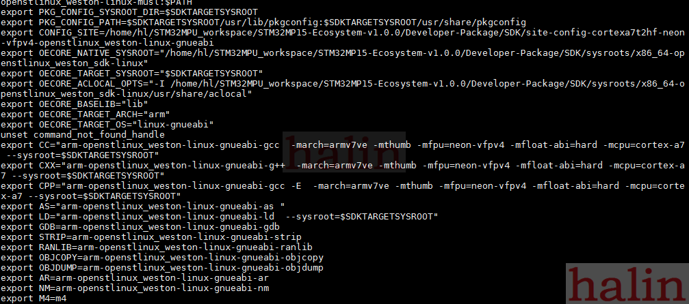
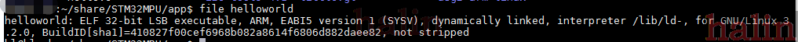

开发环境
1、安装ubuntu
ST官方推荐使用ubuntu 1604 64bit，可以直接安装到PC里也可以是虚拟机(参考PC_prerequisites)。
安装完系统后，还需要安装一些依赖和软件：
sudo apt-get update
sudo apt-get install sed wget curl cvs subversion git-core coreutils unzip
texi2html texinfo docbook-utils gawk python-pysqlite2 diffstat help2man
make gcc build-essential g++ desktop-file-utils chrpath libxml2-utils xmlto
docbook bsdmainutils iputils-ping cpio python-wand python-pycryptopp
python-crypto
sudo apt-get install libsdl1.2-dev xterm corkscrew nfs-common nfs-kernelserver device-tree-compiler mercurial u-boot-tools libarchive-zip-perl
sudo apt-get install ncurses-dev bc linux-headers-generic gcc-multilib
libncurses5-dev libncursesw5-dev lrzsz dos2unix lib32ncurses5 repo libssldev
sudo apt-get install default-jre
2、安装编译器
下载：
wget https://www.st.com/content/ccc/resource/technical/software/sw_development_suite/group0/32/5e/0d/c9/05/87/40/c0/stm32mp1dev_yocto_sdk/files/SDK-x86_64-stm32mp1-openstlinux-4.19-thud-mp1-19-02-20.tar.xz/jcr:content/translations/en.SDK-x86_64-stm32mp1-openstlinux-4.19-thud-mp1-19-02-20.tar.xz
解压：
tar xvf en.SDK-x86_64-stm32mp1-openstlinux-4.19-thud-mp1-19-02-20.tar.xz
修改权限：
chmod +x stm32mp1-openstlinux-4.19-thud-mp1-19-02-20/sdk/st-image-weston-openstlinux-weston-stm32mp1-x86_64-toolchain-2.6-openstlinux-4.19-thud-mp1-19-02-20.sh
新建个目录用做该编译器的安装目录：
mkdir STM32MP
cd STM32MP
mkdir SDK
安装：
$HOME/stm32mp1-openstlinux-4.19-thud-mp1-19-02-20/sdk/st-image-weston-openstlinux-weston-stm32mp1-x86_64-toolchain-2.6-openstlinux-4.19-thud-mp1-19-02-20.sh -d $HOME/STM32MP/SDK
3、使用SDK
SDK的安装目录提供一个脚本文件用来设置环境变量，该脚本文件是：
$HOME/STM32MP/SDK/environment-setup-cortexa7t2hf-neon-vfpv4-openstlinux_weston-linux-gnueabi
看下该脚本文件中有什么内容：

该文件主要就是设置一些环境变量，比如，如果你要用arm-openstlinux_weston-linux-gnueabi-gcc的话，可以使用变量CC。
首先使能环境变量
source $HOME/STM32MP/SDK/environment-setup-cortexa7t2hf-neon-vfpv4-openstlinux_weston-linux-gnueabi
查看下CC是什么内容：
hl@hl-ub:~$ echo $CC
arm-openstlinux_weston-linux-gnueabi-gcc -march=armv7ve -mthumb -mfpu=neon-vfpv4 -mfloat-abi=hard -mcpu=cortex-a7 --sysroot=/home/ub/STM32MPU_workspace/STM32MP15-Ecosystem-v1.0.0/Developer-Package/SDK/sysroots/cortexa7t2hf-neon-vfpv4-openstlinux_weston-linux-gnueabi
可以看到CC指定了编译器，设置了编译选项，还指定了sysroot路劲
创建一个简单的C程序，保存为helloworld.c：
#include <stdio.h>
int main(int argc,char **argv)
{
printf(“Hello STM32MP1\n”);
return 0
}
编译：
$CC -o helloworld helloworld.c
然后看下文件helloword信息：
